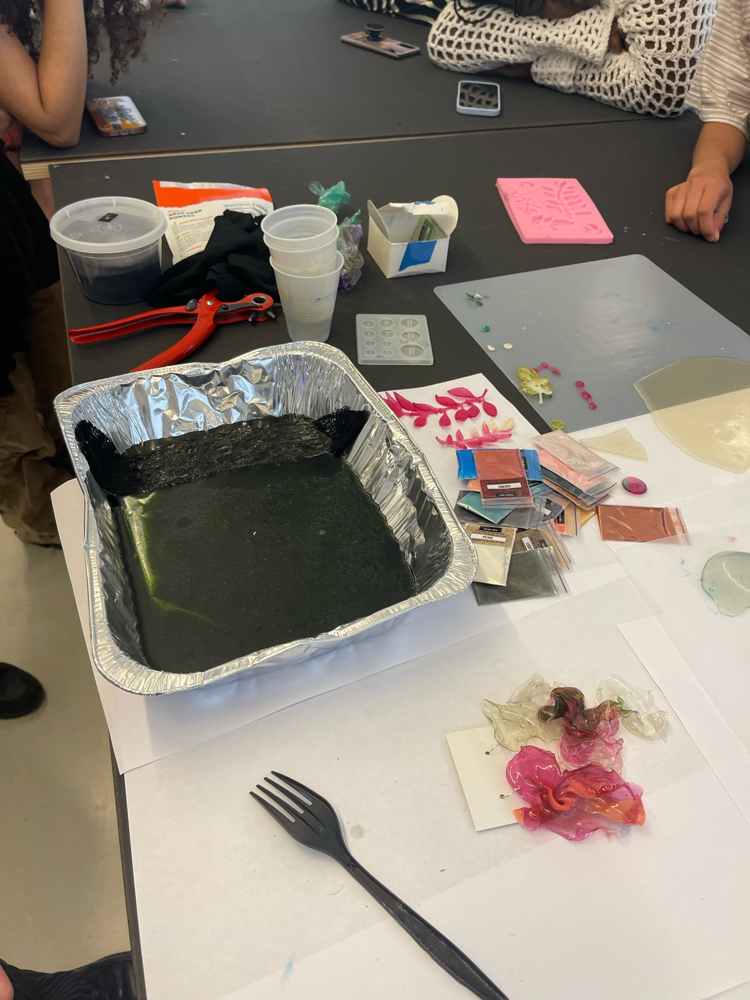
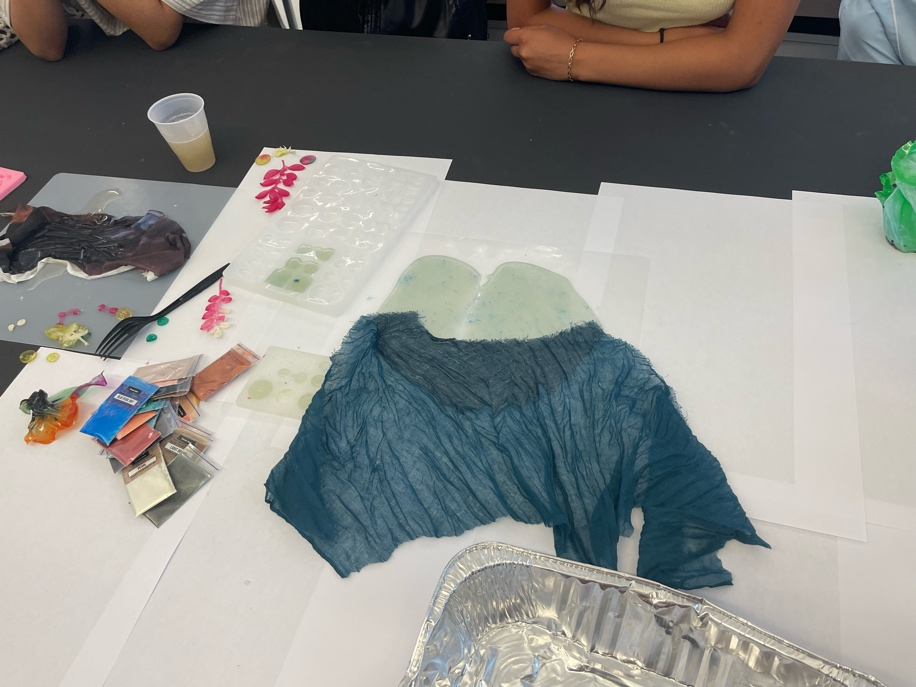
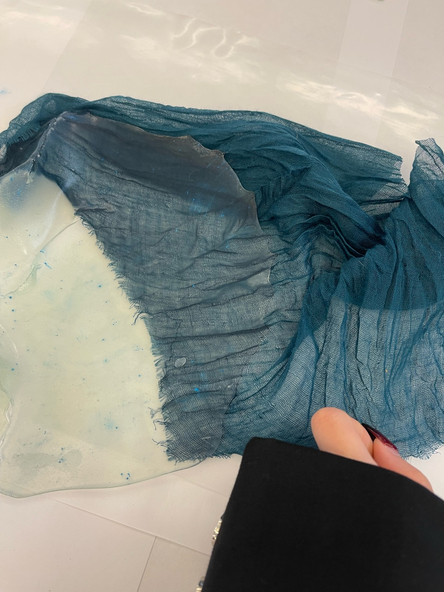
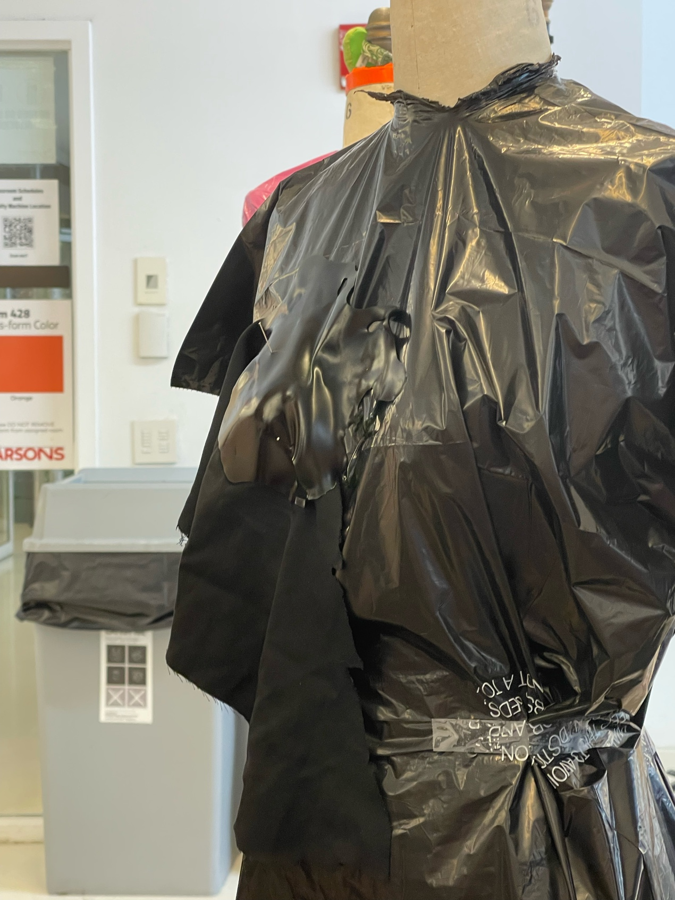
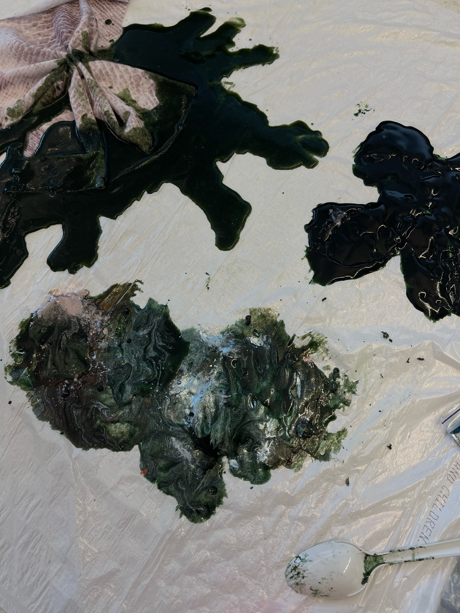
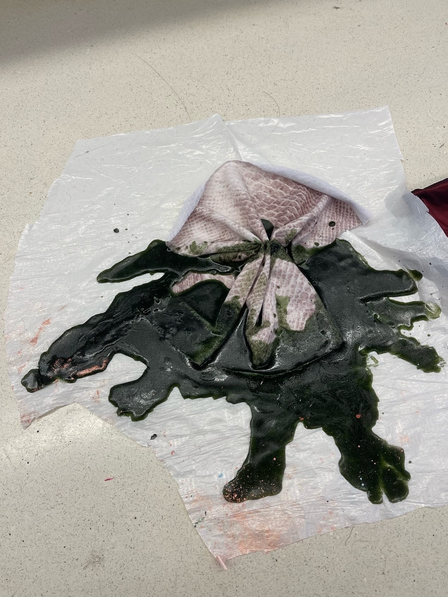
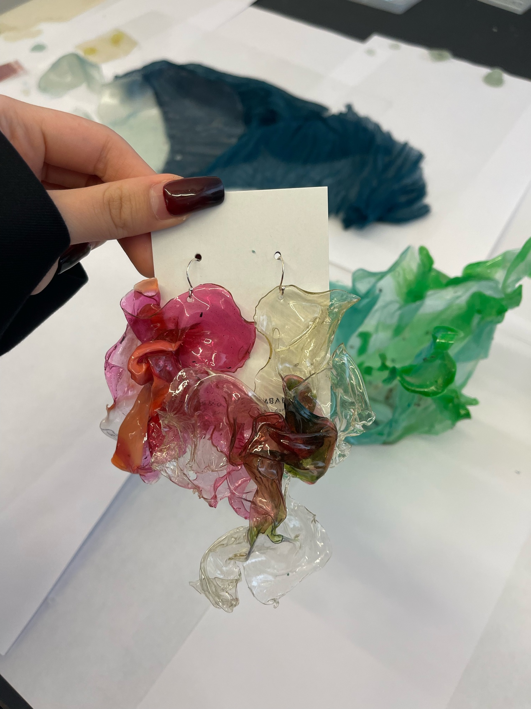

Research sustainable fabrics-seaweed fabric
Boil the seaweed ingredients to a thick consistency
Pour out the desired pattern on the plastic sheet
  Making process
 Final work:
Seaweed fabric has significant significance for the protection of plants, animals and the environment. First of all, it comes from the natural resources in the sea - seaweed, a renewable plant that grows fast and does not require a lot of land and fresh water resources, so its production has relatively little pressure on the ecological environment. Compared with traditional cotton cultivation or chemical fiber manufacturing, seaweed growth occupies less land resources, reducing competition for other plant growth environments. Secondly, seaweed fabrics contribute to animal protection. Traditional animal fabrics, such as leather and wool, are dependent on animal resources, and some production processes pose a threat to animal welfare. Choosing seaweed fabrics means that people can reduce the need for animal products and thus reduce the dependence on intensive hunting, slaughter and feeding of animals, which is particularly important in the protection of biodiversity and animal rights.